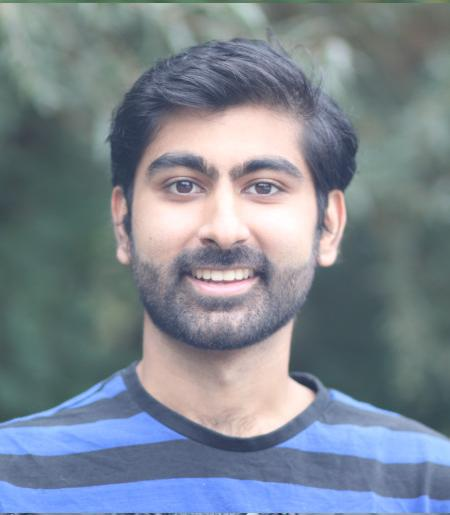

Raj Gandhi

Email
rg593 "at" cornell.ca.
Address
Department of Mathematics
Malott Hall, Cornell University
301 Tower Rd, Ithaca, NY 14853, USA
About
I am a first-year Ph.D. student studying pure mathematics at Cornell University.
In 2021, I recieved a M.Sc. degree in mathematics from the Univerity of Ottawa.
My M.Sc. advisors were Alistair Savage and Kirill Zainoulline.
In 2019, I received a B.Sc. in physics-mathematics from the University of Ottawa.
Here is my CV (Last updated: Jan. 9, 2022).
Research
Publications
- Raj Gandhi. Decomposing Frobenius Heisenberg categories, Journal of Algebra and its Applications. (2020). Vol. 19. No. 5. Pp. 2050094-1-2050094-31. DOI. Preprint.
Preprints
- Raj Gandhi. The formal affine Demazure algebra and real finite reflection groups. 37 pages. Preprint. Code.
- Raj Gandhi. (Joint with Alistair Savage and Kirill Zainoulline). Diagrammatics for F4. 21 pages. Preprint.
M.Sc. thesis
- Raj Gandhi. Oriented cohomology rings of the semisimple linear algebraic groups of ranks 1 and 2. (2021). University of Ottawa library. URL. Code.
Posters
- Raj Gandhi. The ring of twisted differential operators of reflection group I2(5). (2016). University of Ottawa library. URL.
Software
- Raj Gandhi. (Last updated: 2021). Oriented cohomology rings of the semisimple linear algebraic groups of ranks 1 and 2.
- Raj Gandhi. (Last updated: 2020). Modularity and Calabi-Yau threefolds.
Expository notes
The following notes give expository accounts of results that appear to be "well-known" in the literature.
However, I have not been able to find proofs of these results anywhere, so I have written up the proofs myself.
- Raj Gandhi. Line bundles on complete flag varieties are independent of central isogeny class. Notes.
The following notes provide possible directions for future research, as well as small new results
that have the potential to lead to interesting research.
- Raj Gandhi. Component planar graphs. Notes.
Talks
Research talks
- The formal group ring and real finite reflection groups. Algebra and Geometry of Homogeneous Spaces. University of Ottawa. June 3, 2021. Abstract. Slides. Video.
Undergraduate talks
- The Heisenberg category. Student summer seminar. University of Ottawa. August 17, 2018. Slides.
- Twisted formal group algebras. Summer student seminar. University of Ottawa. August 16, 2017. Slides.
- Finite reflection groups. Junior algebra seminar. University of Ottawa. September 8, 2016. Slides.
Conferences attended
- Quadratic forms, linear algebraic groups, and beyond. Ongoing since spring 2020.
Teaching
Universal of Ottawa: Teaching Assistant
- MAT 1320X: Calculus I. Recitation instructor. (Summer 2021).
- MAT 2355: Introduction to Geometry. Grader. (Winter 2021).
- MAT 1348: Discrete Mathematics for Computing. Grader and recitation instructor. (Winter 2021).
- MAT 2141: Honours Linear Algebra. Grader. (Fall 2020).
- MAT 1341: Introduction to Linear Algebra. Grader and recitation instructor. (Fall 2020).
- MAT 1332: Calculus II for the Life Sciences. Grader and recitation instructor. (Fall 2020).
- MAT 1300X: Mathematical Methods I. Recitation instructor. (Summer 2020).
- MAT 1320: Calculus I. Grader and recitation instructor. (Winter 2020).
- MAT 1348: Discrete Mathematics for Computing. Grader and recitation instructor. (Winter 2020).
- MAT 1362: Mathematical Reasoning and Proofs Grader. (Winter 2020).
- MAT 1362: Mathematical Reasoning and Proofs. Grader and recitation instructor. (Fall 2019).
Community outreach
- Through the Grasshoppr program at Cornell, Aria Beaupre and I will be teaching a 5-day long mini-course titled
"The Mathematics of Paradoxes of Decision Making" at Namaster Montessori school during the Winter 2022 semester.
The course is aimed at 5th and 6th graders. The lecture notes for the course will be posted shortly.